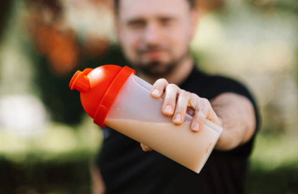
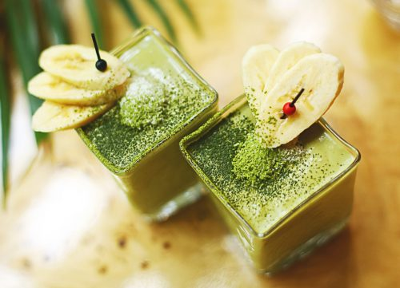

WEIGHT LOSS DRINKS: CHOOSE WISELY
They’re all the same, aren’t they?
Although similar… there is a big difference between them, especially if you want to lose weight and keep it off.
Protein Shakes Often Do More Harm Than Good
Marketing companies will have you believe that protein powder is great for adding muscle and trimming up. But unless you’re a high-level athlete, it might be sabotaging your weight loss goals.

High In Sugar & Artificial Sweeteners
With so many delicious flavors… chocolate, strawberry, French vanilla, banana… most protein powders taste as good as real milkshakes.
Manufacturers know that flavor and texture is crucial for success… so they add tons of flavorings, sugar, and unnatural additives to make them taste better.
Some protein powders have little added sugar, and others have a lot (as much as 23 grams per scoop). And when you add them to a smoothie with milk and fruit, the final product can have up to 1200 calories… which will spike your insulin/blood sugar levels (when insulin spikes, the body stores fat).
Artificial sweeteners are no better…
Artificial sweeteners: ‘Sweet taste in itself’ can affect metabolism… “Sweetness should be consumed in moderation, regardless of the calories,” caution researchers, as a new study reveals the impact of consuming artificial sweeteners on metabolism and glucose control.
In fact, the latest study suggests that merely tasting something sweet could alter our metabolism and spike blood sugar levels.
To add insult to injury, artificial sugars often cause water retention which is a common source of misery for people who keep a close eye on the bathroom scales.
And when your blood-sugar levels crash, you crave sugar even more…
The Body Turns Unused Protein Into Glucose (sugar)
People on low carb diets often lack that ‘full feeling’ that carbohydrates used to give them… so they often reach for a zero-sugar protein shake to ‘fill the hunger gap’.
What many don’t realize is that the body converts excess protein into glucose (sugar).
Your recommended daily intake of protein can be calculated by a person’s body weight. The Academy of Nutrition and Dietetics recommends that the average person should consume 0.8 grams of protein per kilogram or 0.35 grams per pound of body weight per day for general health.
With the average weight for a male being around 90kg (200lbs) and the average female weight being 65kg (145lbs), that means you only need between 130 – 160 grams of protein a day. Which means, unless you’re a bodybuilder, protein shakes are likely tipping you over your daily protein limit.
The body converts excess protein into sugar (sugar is a form of carb) according to diabetes.org…
“Excess amino acids must be converted into other storage products or oxidized as fuel. excess protein intake can, through the process of gluconeogenesis, produce glucose. This would mean that 100g of protein could produce ~50 g of glucose (sugar)”.
Note: If you’ve struggled to lose weight on the keto diet, this is likely the reason.
Heavy Metals & Other Carcinogenic Chemicals
‘The Clean Label Project’ released a report about toxins in protein powders and meal replacement drinks.
Researchers screened 134 products for 130 types of toxins and found that many protein powders contained high levels of heavy metals (arsenic, lead, mercury and cadmium), bisphenol-A (BPA is used to make plastic) xenoestrogens, pesticides, or other contaminants with links to cancer and other health conditions.
Some toxins were significantly high. For example, one protein powder contained 25 times the allowed limit of BPA. Others showed up to 22 times the acceptable level of lead and cadmium.
Risk Of Extremely Painful Side Effects
Too much protein can cause kidney stones or gout.
When you consume too much protein, your kidneys can get overworked and becomes less effective at flushing byproducts from the breakdown of protein, which can lead to whey protein kidney stones.
Kidney stones occur when components of urine (calcium, oxalate, uric acid and phosphorus) rise and get out of balance. When these levels become too concentrated, they can harden and form jagged mineral deposits that are unbearably painful to pass.
High levels of uric acid can also cause gout. Gout is caused by excess uric acid which causes crystals to accumulate in your joints. Sufferers of gout describe gout as “having broken glass in between your joints”.
Meal Replacement Drinks – A Wolf Dressed In Sheep’s Clothing
Like protein powder producers, meal replacement drink manufacturers couldn’t care less about your health. They are only interested in making money.
Companies shift their marketing to meet consumer trends and demands, but they don’t usually change much in how they process their food…
At the end of the day, their top priority is reducing costs and maximizing profits… which includes using every trick in the book to hide unhealthy ingredients from you.
Synthetic Vitamins
To fulfil their ‘healthy’ claims, meal replacement companies are required to add vitamins into their mixture…
But synthetic vitamins made in a lab, compared to fresh vitamins from a plant are two different kettles of fish.
Synthetic vitamins are hard on the kidneys and gut lining… and are poorly absorbed.
Whereas vitamins from a fresh plant has been designed-by-nature to harmonize with your body… and is the body’s preferred vitamin delivery system.
Ingredient List Longer Than Your Arm
It’s no secret that highly processed foods are bad for health and waistline.
If you chat to any nutritionist, they will tell you to steer clear away from processed foods with a long list of ingredients… especially if you have trouble recognizing (or pronouncing) some of the ingredients.
Here’s an ingredient list for a popular meal replacement drink in the US (marketed as ‘healthy’):
Corn Maltodextrin, Sugar, Milk Protein Concentrate, Blend of Vegetable Oils (Canola, Corn), Soy Protein Isolate, Nonfat Milk, Vitamins & Minerals (Potassium Citrate, Magnesium Phosphate, Calcium Carbonate, Sodium Citrate, Calcium Phosphate, Choline Chloride, Ascorbic Acid, Potassium Chloride, Ferrous Sulfate, dl-Alpha-Tocopheryl Acetate, Zinc Sulfate, Niacinamide, Calcium Pantothenate, Manganese Sulfate, Pyridoxine Hydrochloride, Thiamine Hydrochloride, Copper Sulfate, Riboflavin, Vitamin A Palmitate, Folic Acid, Chromium Chloride, Potassium Iodide, Sodium Selenate, Sodium Molybdate, Phylloquinone, Biotin, Vitamin D3, Vitamin B12), Natural & Artificial Flavor, Cellulose Gel, Salt, Cellulose Gum, Soy Lecithin, Monoglycerides, Carrageenan, Acesulfame Potassium, Sucralose, and Red 3.
High In Trans Fats
Meal replacement manufacturers prefer hydrogenated oils for its low cost and long shelf life. Little do consumers know that these oils are high in trans fats, and can cause some serious side effects such as:
- Impaired blood sugar control
- increased inflammation
- Increased risk of metabolic syndrome (high blood pressure, heart attack stroke)
.
High In Soy
Soy is a cheap ingredient found in most highly processed foods. Most people believe that soy is good for you… when in fact, fermented soy is the super food. Unfermented soy however, is linked to a long list of health hazards… such as:
- High in estrogen (which can disrupt hormone balance)
- Can disrupt the thyroid gland
- Can cause pancreatic disorders
- High in anti-nutrients
- High levels of aluminum
- Most soy is GMO
They Can Be An Expensive Waste Of Money
Packet meal replacement drinks are not cheap… they can cost up to $7.99 each!
The problem is that many meal replacement drinks aren’t sold separately. This is typical with higher priced brands… where you have to order a month’s worth of meal replacement drinks to get them for a reasonable price.
Most people are left disappointed when they discover that their replacement drinks taste ‘weird’ or they simply don’t like the flavors they chose. So, the box ends up sitting in the back of the cupboard until they get thrown out with the next spring clean.
Fresh Smoothies – Healthy, Cheap, Easy, Fast, & Slimming

Fresh Is Best…
When it comes to any kind of food, fresh is always best.
With fresh smoothies, vitamins and minerals come in an ideal bioavailable form that the body prefers.
Fresh smoothies taste better, they cost cents to make, and unlike meal replacement drinks or protein shakes, they will give you noticeable results with your weight loss goals (if you make them right).
Beautiful Skin, Hair & Nails…
Antioxidants are natures magic pill for bringing out your natural beauty. Fresh fruits and vegetables are a powerhouse of nutrients and antioxidants. This combined with the detoxification benefits of green smoothies leads to clear, glowing skin, stronger nails and lustrous, healthy hair.
They also help reduce or eliminate eczema and other skin conditions.
Anti-Aging…
You not only get clearer skin, but the nutrients in green smoothies also help boost production of collagen, creating firmer, younger looking skin.
Apples, strawberries and oranges are great choices to add to your smoothie for this.
Q10 is a naturally occurring coenzyme that helps your skin stay firm and smooth. As you age, the Q10 in your body decreases.
Green smoothies are a great source of these anti-aging enzymes.
Instead of buying those super expensive anti-aging lotions with CoQ10, try a green smoothie instead! It’s cheaper and you know exactly what is in it.
Macros Are Important…
In the world of weight loss, you can count calories, points, joules, or carbs. But if you want to lose weight and keep it off… counting macros is best.
‘Macro’ is short for macronutrient.
There are three different categories of nutrients that give us energy: protein, carbohydrates and fats. So when you’re counting your macros, you’re counting the grams of protein, carbs and fat that you’re eating throughout the day.
There’s a plethora of free macro calculators online… unfortunately, many of them calculate different results… so don’t base your macros off one website alone… try a few to make sure you’re getting the right data.
Although counting macros is extremely effective, it can become a bit cumbersome having to do ‘diet math’ before you can have a meal.
Weight Loss Recipes Designed By A Nutritionist…
For long-term weight loss… a smoothie diet has got to be super easy, super fast, inexpensive, no weird exotic ingredients… and of course, it has to taste amazing.
It must be packed with everything your body needs… and satisfying!
And most importantly… you don’t have to do any ‘diet math’!
Just spend 10 minutes shopping, come home, throw a few ingredients in the blender and 2 minutes later, you’ve got a delicious, nutritious, satisfying meal.
Replace two meals of the day with fresh, satisfying smoothies, and then you can eat whatever you like for your third meal.
What Makes ‘The Smoothie Diet’ Different?
This Is NOT just a big book of smoothie recipes.
You’re getting the same proven 3-Week weight loss and health improvement program that Drew, a specialized weight loss nutritionist – shares with his private clients.
The secret that makes Drew’s Smoothie Diet so effective is the Custom 3-Week Weight Loss Schedule. All the smoothies are given in a very specific sequence and frequency to maximize your results.
For example, the nutrient and ingredient ratios vary week to week to make sure the weight keeps coming off and stays off.
The Smoothie Diet 21 Day Transformation
Whether you need to lose the last 5-10 lbs, or you want to get rid of 40lbs or more, this will work for you.
This diet is extremely flexible so even though this program is 21 days you can continue using it for as long as you want to lose as much weight as you want, and it’s explained in a easy to follow manner.
Dramatic Weight Loss Is Only One Of The Numerous Benefits You’ll Get From This Diet…
How would you like more energy, clearer skin, better sleep, sharper thinking, stabilized blood sugar, and more?
You are only 21 days away…
- You’re getting the FULL 21-DAY WEIGHT LOSS AND HEALTH IMPROVEMENT PROGRAM I regularly use with my private coaching clients.
- Over 36 DELICIOUS FAT-MELTING MEAL-REPLACEMENT SMOOTHIE RECIPES
- SHOPPING LISTS FOR EACH WEEK To Make It Super Simple To Get Everything You Need
- SMOOTHIE MAKING TIPS & PREP GUIDE To Make Sure there is ZERO trial and error and to ensure you spend less time in the kitchen and more time enjoying your new confidence and energy levels!
- Drew is only an email away if you’re not sure about anything
- You’re fully protected by a 60-day money back guarantee (no questions asked)